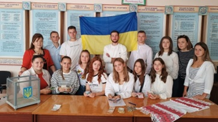
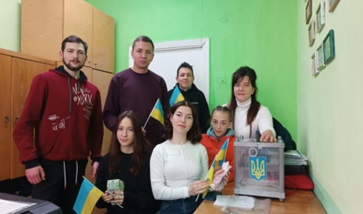
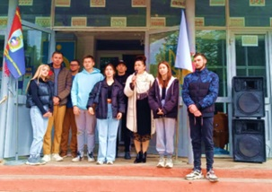

ВОЛОНТЕРСТВО НЕ ХОБІ, ЦЕ СПОСІБ ЖИТТЯ!

Волонтерство сьогодні — це не просто кроки до перемоги, це зміна світогляду, розуміння важливості своєї участі у житті країни й усвідомлення того, що в цю секунду ми творимо наше майбутнє.
В Новоушицькому фаховому коледжі волонтерство – важливий аспект виховної роботи. Основні завдання волонтерської діяльності:
● згуртування коледжанського колективу навколо добрих справ;
● задоволення духовних інтересів та потреб здобувачів освіти;
● патріотичне виховання;
● профілактика девіантної поведінки і шкідливих звичок;
● пропагування здорового способу життя;
● підтримка просоціальних ініціатив дітей та учнівської молоді;
● налагодження партнерства коледжу з органами державної влади та громадськими організаціями у реалізації просоціальних ініціатив.
Волонтерською діяльністю здобувачі освіти займались завжди: це була допомога дітям в дитячі будинки, реабілітаційні дитячі центри, людям, що потрапили в скрутне матеріальне становище.
Ми живемо в часи історичних змін та запеклої боротьби за можливість бути і самостверджуватися як нація, за право називатися українцями, спілкуватися українською, бути вільними й незалежними у своїх поглядах та діях. Боротьба триває – на фронті й в тилу . Наші відносно мирні міста беруть на себе обов’язок допомагати і підтримувати захисників з вдячністю за те, що вони продовжують стримувати ворожі атаки, з гордістю, що живемо поряд зі справжніми героями сучасності.
 |
 |
Сьогодні кожен здобувач освіти – волонтер за покликом серця. Слово «волонтер» міцно ввійшло в життя українців, починаючи з Революції Гідності та російської агресії на сході України, а волонтерський рух став зразком самоорганізації та єдності нашого суспільства.
Навчання, відпочинок, повітряні тривоги – це сьогоднішні реалії наших студентів. Одні захищають Батьківщину на фронті, інші допомагають з тилу. У нашому коледжі активно розвивається волонтерство серед студентської молоді.
З 2013-2014 волонтерство змінилося і коледж активно долучився до допомоги учасникам Революції Гідності, а пізніше і учасникам АТО і ООС. З початку війни в Україні з 2014 року в нашому коледжі почав діяти волонтерський осередок, який активно долучився до збору та передачі на фронт захисникам продуктів харчування (чай, кава, солодощі…), предметів одягу, оберегів та малюнків. За цей період в коледжі проводилися тематичні ярмарки, а зібрані кошти використовувались на придбання необхідного для наших захисників. Члени ради лідерів коледжу активно долучилися до волонтерської діяльності та ініціюють заходи, які згуртовують представників груп для виконання завдання та досягнення мети – допомога захисникам на передовій. І сьогодні життя доводить, що волонтерський рух для студентської молоді є невичерпним джерелом можливості вчитися та сприяти розвитку солідарності, відповідальності, милосердя, толерантності.
З початком повномасштабного вторгнення росії колектив коледжу з перших днів активно продовжив своє волонтерство, деякі студенти і працівники долучилися до громадських волонтерських організацій. З 2022 року студенти ВСП НФК ЗВО ПДУ активно волонтерять: збирають необхідні речі та медикаменти на фронт, проводять благодійні концерти, ярмарки та передають кошти – адресну допомогу воїнам ЗСУ. Організовано роботу студентської пекарні, акцій «Студентська опіка». Ми допомагаємо нашим випускникам та родичам працівників коледжу, які воюють з окупантом і є опорою нашої багатостраждальної, але стійкої духом і незламної України.
Допомагати, щоб перемогти – це найкращий і єдино правильний рецепт здобуття перемоги у цій війні для кожного українця.
Студенти коледжу плетуть маскувальні сітки, в гуртожитку коледжу діє студентська пекарня, щочетверга проводяться благодійні концерти, в майстерні виготовляють окопні свічки, лагодять автомобілі для потреб ЗСУ. Налагоджено мости співпраці ГО Допомога дітям «SOS», ВГО «Українська служба порятунку». Взято під студентську опіку Вільховецький будинок інтернат для громадян похилого віку та осіб з інвалідністю, ветеранів праці коледжу.
За свою волонтерську діяльність колективи студентів та працівників коледжу неодноразово отримували подяки.
Волонтерство закладено в генетичному коді українців і наш колектив буде продовжувати свою діяльність, забезпечуючи тил і наближати нашу Перемогу!
Дякуємо всім, хто долучається до волонтерської діяльності! Миру всім! Наближаємо Перемогу разом!
✔Положення про студентську волонтерську службу у ВСП НФК ЗВО ПДУ
✔ВОЛОНТЕРСТВО: наші конкретні справи
ВОЛОНТЕРСЬКИЙ НАПРЯМ Є ОДНИМ З ПРІОРИТЕТНИХ У СУЧАСНИХ РЕАЛІЯХ ДЛЯ СТУДЕНТСТВА, ТОМУ РОЗВИВАЄМОСЬ ТА ПРАЦЮЄМО ДЛЯ НАБЛИЖЕННЯ ПЕРЕМОГИ!